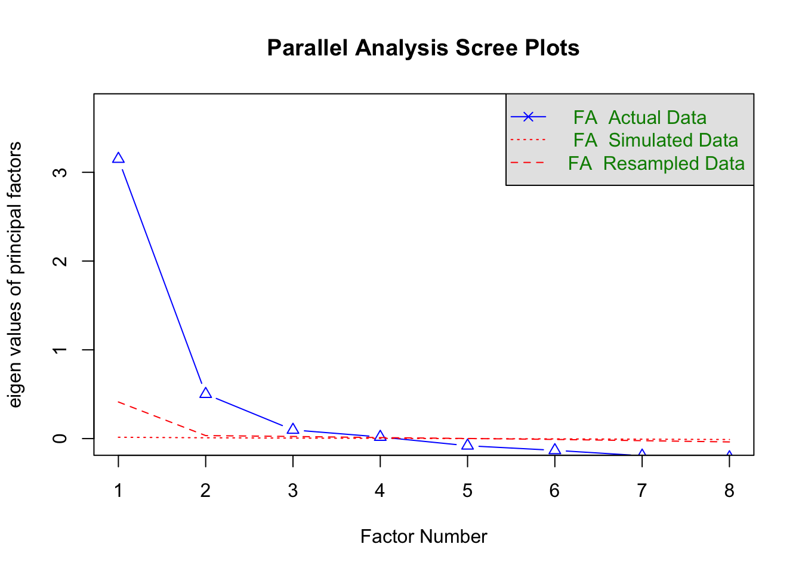

Wave 11 of the British Election Study Internet Panel contains the most detailed battery on national identity across the entire series, providing a unique opportunity to distinguish empirically between ethnic and civic conceptions of British nationalism. This wave includes eight items measuring beliefs about who counts as “truly British,” with four indicators reflecting ethnic criteria (being born in Britain, holding British citizenship, having lived in Britain, and being Christian) and four reflecting civic criteria (speaking English, respecting British laws, following British customs, and feeling British). These items, collected simultaneously in a single fieldwork period, allow for a consistent latent-structure analysis free from cross-wave measurement noise.
The goal of this brief report is to examine the empirical structure of these nationalism indicators in Wave 11, assess whether they cluster into distinct latent dimensions, and extract reliable factor scores. These scores will be used in subsequent analyses to test how different forms of national identity interact with economic conditions in shaping attitudes toward immigration.
The four ethnic nationalism items: born in Britain, live in Britain, citizen of Britain, and Christian, exhibit moderate to strong positive correlations with one another (0.27 to 0.7), indicating that they tap a shared underlying construct centered on origin-based and ascriptive membership criteria. Similarly, the four civic nationalism items: speak English, follow British customs, respect British law, and feel British, also correlate moderately among themselves (0.39 to .05), reflecting a distinct dimension based on behavioral and norms-based criteria. Cross-cluster correlations are consistently weaker: ethnic items correlate with civic items in the 0.17 to 0.41 range, suggesting related but clearly separable constructs. Overall, the correlation structure shows two internally cohesive clusters with weaker between-cluster associations, providing strong initial evidence for a two-dimensional latent structure that distinguishes ethnic from civic conceptions of national identity in the BES wave 11.

Parallel analysis suggests that the number of factors = 4 and the number of components = NA
The parallel analysis compares the observed eigenvalues of the nationalism items with those obtained from random data of the same size. The first observed factor shows a large eigenvalue (> 3), and the second also exceeds the simulated benchmark, indicating two clearly meaningful latent dimensions. Although the procedure formally flags up to four factors as exceeding the resampled eigenvalues, the third and fourth eigenvalues are extremely small and are only marginally above the noise threshold. This pattern. Given the negligible variance explained by the third and fourth factors and the strong theoretical expectation of an ethnic–civic distinction, we can interpret the parallel analysis as supporting the retention of a two-factor solution.
Factor Analysis using method = ml
Call: fa(r = nat11, nfactors = 2, rotate = "oblimin", fm = "ml")
Standardized loadings (pattern matrix) based upon correlation matrix
ML2 ML1 h2 u2 com
britBornHereW11 -0.03 0.86 0.72 0.28 1.0
britCitizenW11 0.46 0.31 0.47 0.53 1.7
britLiveHereW11 0.05 0.79 0.68 0.32 1.0
britChristianW11 0.03 0.48 0.24 0.76 1.0
britSpeakEnglishW11 0.69 -0.01 0.47 0.53 1.0
britCustomsW11 0.52 0.17 0.40 0.60 1.2
britRespectLawW11 0.76 -0.12 0.49 0.51 1.1
britFeelBritishW11 0.52 0.21 0.44 0.56 1.3
ML2 ML1
SS loadings 1.97 1.94
Proportion Var 0.25 0.24
Cumulative Var 0.25 0.49
Proportion Explained 0.50 0.50
Cumulative Proportion 0.50 1.00
With factor correlations of
ML2 ML1
ML2 1.00 0.57
ML1 0.57 1.00
Mean item complexity = 1.2
Test of the hypothesis that 2 factors are sufficient.
df null model = 28 with the objective function = 2.68 with Chi Square = 327962.2
df of the model are 13 and the objective function was 0.06
The root mean square of the residuals (RMSR) is 0.03
The df corrected root mean square of the residuals is 0.04
The harmonic n.obs is 29028 with the empirical chi square 1189.7 with prob < 2.9e-246
The total n.obs was 122372 with Likelihood Chi Square = 7504.02 with prob < 0
Tucker Lewis Index of factoring reliability = 0.951
RMSEA index = 0.069 and the 90 % confidence intervals are 0.067 0.07
BIC = 7351.73
Fit based upon off diagonal values = 1
Measures of factor score adequacy
ML2 ML1
Correlation of (regression) scores with factors 0.89 0.92
Multiple R square of scores with factors 0.79 0.85
Minimum correlation of possible factor scores 0.59 0.70
The two-factor maximum likelihood EFA with oblimin rotation provides a strong and theoretically coherent representation of the Wave-11 nationalism items. The model shows balanced factor strengths, with Factor 1 (ML1) and Factor 2 (ML2) showing nearly identical SS loadings (1.94 and 1.97, respectively) and each explaining roughly one quarter of total variance (24% and 25%). Combined, the two factors account for 49% of the variance in the eight indicators. The correlation between the two latent dimensions is moderate (0.57), indicating that ethnic and civic conceptions of national identity are related but empirically distinct constructs.
Model fit indices further confirm the adequacy of the two-factor solution. Residuals are low (0.03 and 0.04), and the Tucker–Lewis Index ( 0.951) indicates good fit. Measures of factor score adequacy also indicate high reliability. Regression-based scores correlate strongly with the latent factors 0.92 and 0.89 for ML1 and ML2, repectively, with high R² values. Overall, the EFA provides clear evidence for two interpretable and well-behaved latent dimensions corresponding to ethnic and civic nationalism.